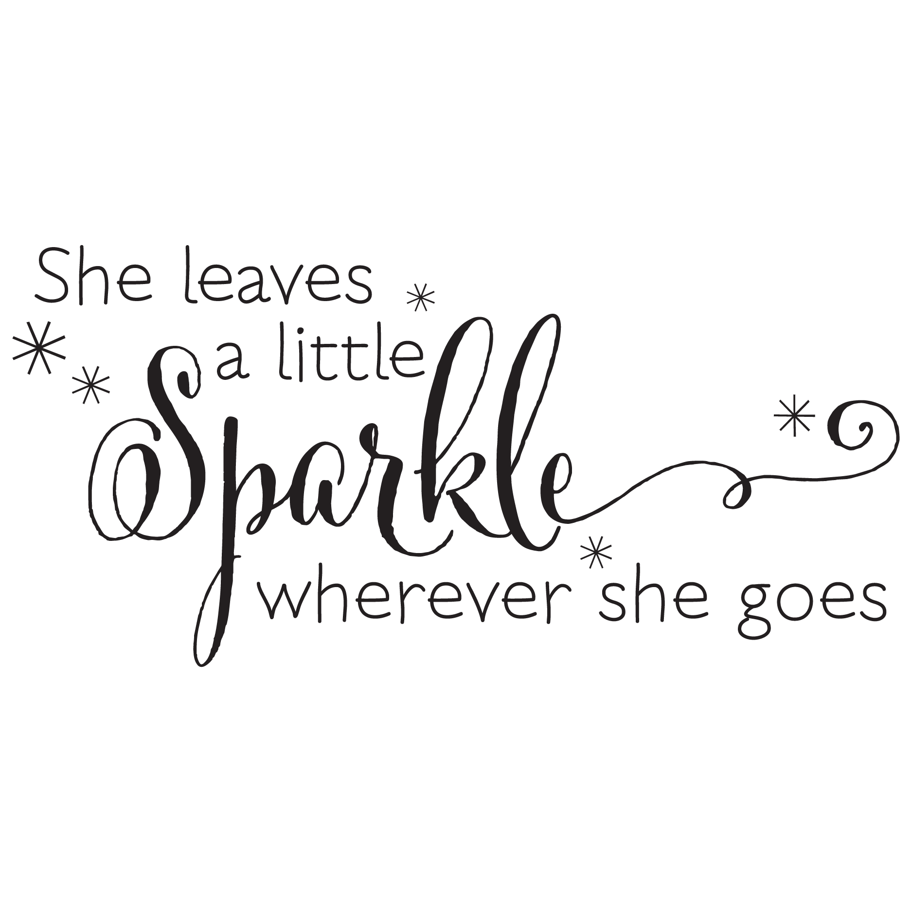

About Me
Hello to all, and welcome to my Art Portfolio. I am super excited for
all of you to learn more about me and my journey. From a young age,
I have always loved to draw. My parents can vouch with the (probably
hundreds) of white paper I took from their printer. It was a passion of
mine and just something I was good at. I don't draw daily like I used
to, and I don't consider myself to be the best at it. However, that doesn't
not make me an artist. I believe that everyone is an artist in some way.
Having the skill to paint or draw isn't just what makes you an artist, but
rather your ability to create does. Art is beautiful and can tell a life story.
The essence of life is art.

I am an undergraduate student at Indiana University, studying Informatics
with a cognate in Fine Arts and a soon minor in Computer Science. I plan
to expand my technical skills and knowledge to achieve technological
innovation and solve world problems.
What Is This For?
I enjoy drawing and wanted to share some of my artwork
with the world. However, that isn't the only reason I made
this portfolio. I also really enjoy coding, and wanted more
experience/practice doing so. Therefore, making an art port-
folio was the perfect way to get the experience I've been
wanting. I am also hoping that this might inspire someone
who might be contemplating whether they are good or not
good enough at art. I want someone to look at my work and
not compare theirs to mine, but rather see it as a push to keep
going and trying.
My Art Background And Style
Even though I've been drawing as a child, I haven't always been taking it seriously. I wasn't
serious until around 2014/2015. When I first started to draw it was just from my imagination.
Though when I actually wanted to learn something, I would pick a picture and attempt to draw
it from observation. I went from drawing features, to faces, to full on people. Then I would
expand and start practicing animals. I then went on to create an instagram page just for my art,
and take suggestions for what I should draw in the future. Drawing is something that I would do
off and on over the few years, but is also something that I will never give up on. Even though my
career path is not directly involving art, there are a lot of things that I have learned and can bring
with me on my journey. I try to use creativity with everything I do in hope of creating change.
Fun Facts
I have a lot of things that I like to do outside of drawing. I enjoy watching movies and reading
books occasionally. I am apart of a book club where a couple of us get together to read a book
every other month (It's quite relaxing). One fact you should know about me is that I LOVE the
Lion King and I know just about every line from the movie. Also, I really really love food and
enjoy traveling, which is something I plan on doing more often.
